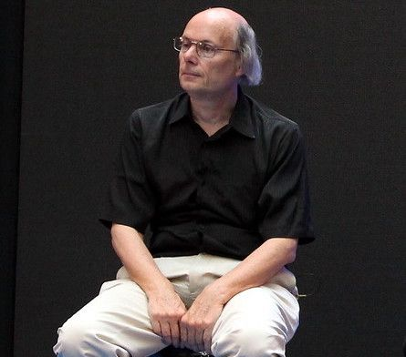
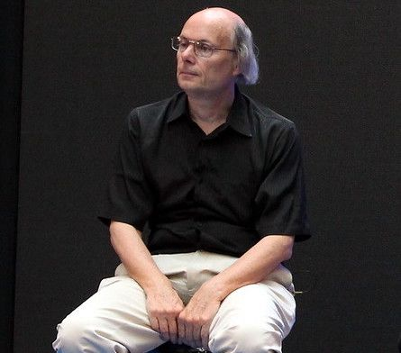

Биография.
Страуструп Бьёрн (дат. Bjarne Stroustrup) — компьютерный инженер, программист. Известен как автор языка программирования C++ который он сам называл «Cи с классами».
Карьера.
Страуструп родился и вырос в городе Орхус втором по величине городе в Дании. Окончил Орхусский университет (Дания, 1975) по математике и информатике, защитил диссертацию (Ph. D.) по информатике в Кембридже (1979).
Бьёрн Страуструп получил стпень доктора философии, когда работал над конструированием распределённой системы в компьютерной лаборатории Кэмбриджского университета (Англия). Член колледжа имени Черчилля.
В 1979 году Страуструп, вместе со своей женой и дочерью, переехал в Нью-Джерси, чтобы пойти работать в компьютерный научно-исследовательский центр Bell Telephone Laboratories. В этом же году у него родился сын Николас. До 2002 года возглавлял отдел исследований в области крупномасштабного программирования в компании AT&T (Computer Science Research Center of Bell Telephone Laboratories). Ныне профессор Техасского университета А&М.
In 1979, Stroustrup, along with his wife and daughter, moved to New Jersey to work at the Bell Telephone Laboratories computer research center. That same year, his son Nicholas was born.Until 2002, he headed the large-scale programming research department at AT&T (Computer Science Research Center of Bell Telephone Laboratories). He is currently a professor at the University of Washington. Until 2002, he headed the large-scale programming research department at AT&T (Computer Science Research Center of Bell Telephone Laboratories). He is currently a professor at Texas A&M University.
Бьёрн Страуструп разработал язык C++.
В последнее время С++ становится самым широко используемым языком программирования, который поддерживает объектно-ориентированное программирование. Страуструп стал первопроходцем в области использования объектно-ориентированной и общей техник в области создания программных приложений, где эффективность является приоритетным свойством, таких как симуляторы, графика, пользовательские интерфейсы, прикладные системы, системы для научных вычислений.
Научные и общественные заслуги
Книга Страуструпа «Язык программирования C++» — одна из самых широко читаемых книг из своей области, которая была переведена на 19 языков. Следующая книга, «Дизайн и эволюция C++», открыла много нового в описании языков программирования: новые идеи, идеалы, проблемы. В дополнение к своим пяти книгам, Страуструп опубликовал более сотни академических и других популярных статей.
Бьёрн принимал активное участие в создании стандарта ANSI/ISO для C++ и продолжает работу по поддержанию и пересмотру стандарта.
В 1990 году «Справочное руководство по языку программирования С++ с комментариями» («The Annotated C++ Reference Manual») получило награду за непревзойдённое мастерство в области технической документации по мнению журнала «Dr. Dobb’s Journal». По мнению этого же журнала, в 1994 году книга «Дизайн и эволюция С++» получила награду «Productivity Award» за помощь программистам в совершенствовании их исходных кодов.
В 1993 году он был награждён премией имени Грейс Мюррей Хоппер «за его ранние работы в области языка С++, базирующиеся на его разработках и внёсшие наибольшее влияние в языки программирования за всю историю вычислительной техники». Кроме того, Страуструп является членом Техасской академии медицины, инженерии и науки (англ. Texas Academy of Medicine, Engineering, and Science). Бьёрн Страуструп был назван журналом «Fortune magazine» одним из «двенадцати лучших молодых американских учёных».
Бьёрн Страуструп был избран членом Национальной Академии Инженерии в США («National Academy of Engineering») в 2004 году за «создание языка С++». Как первый компьютерный учёный, он был награждён («William Procter Prize for Scientific Achievement from Sigma Xi») американским научно-исследовательским сообществом в 2005 году. Он также получил награду компьютерного сообщества IEEE «за начало разработки и коммерциализации объектно-ориентированной технологии создания программ и за большие изменения, внесённые в бизнес и индустрию».